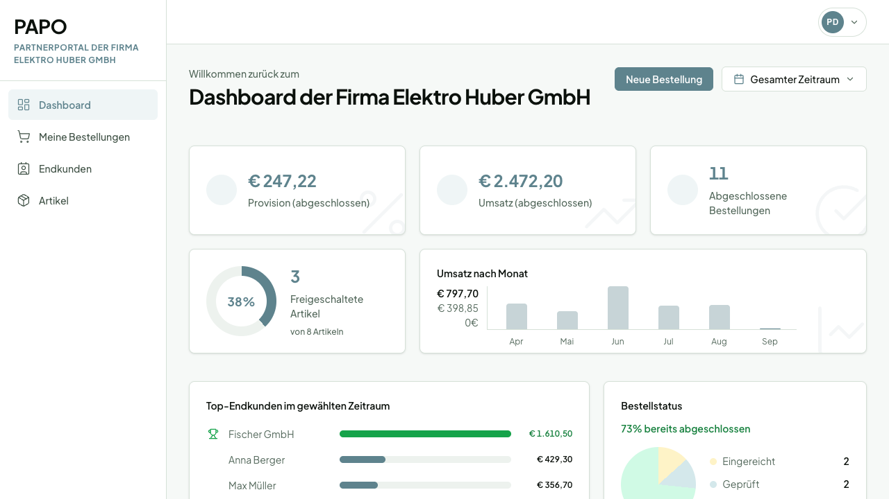
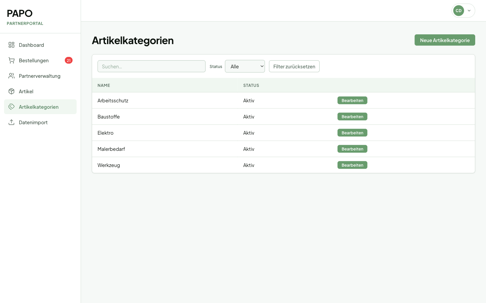

HTL Diplomarbeit · Informatik / IT Medientechnik
Partnerportal
PaPo ist ein B2B-Bestellportal für partnerbasierte Vertriebsmodelle
Struktur: Unternehmen → Partner → Endkunde.
Chris Vahram & Tobias Huemer
· 2026
Akteure & Struktur
Unternehmen → Partner → Endkunde
Unternehmen
→
Partner
→
Endkunde
1 Unternehmen : n Partner · 1 Partner : n Endkunden – klare Struktur
Unternehmen
- Verwaltet Partner & Artikel
- Importiert Excel/CSV-Daten
- Schaltet Artikel pro Partner frei
- Sieht alle Bestellungen, setzt Status
→
Partner
- Führt Bestellungen für Endkunden durch
- Sieht nur freigeschaltete Artikel
- Legt Endkunden an und verwaltet sie
- Dashboard: Überblick über Bestellungen & Provisionen
- Ein gemeinsamer organisatorischer Zugang je Partnerfirma
→
Endkunde
- Wird vom Partner angelegt und verwaltet
- Die Bestellung führt der Partner für ihn durch
- Bezahlt dem Unternehmen
- Erhält Ware und Bestätigung
Der USP
PAPO wird die Drehscheibe des Unternehmens
Kernprozess der Anwendung: der Partner führt die Bestellung für seinen Endkunden durch.
Bisher
- Bestellungen per E-Mail oder Telefon
- Informationen liegen verteilt vor
- Zuordnung & Provision manuell
Mit PAPO
- Bestellung direkt im Portal
- Zentrale Partner- & Artikelverwaltung
- Automatische Zuordnung & Provision
„Dieses Partnerportal (PAPO) wird zukünftig die Drehscheibe für das ganze Unternehmen bilden.“
Ausgangslage
Bestellungen laufen derzeit manuell
Derzeit gibt es kein gemeinsames System für Partner- und Artikeldaten – jede Bestellung braucht Abstimmung und Übertragung.
- Partner- und Artikeldaten liegen getrennt vor
- Artikel-Freigaben brauchen manuelle Pflege
- Bestellung und Provision werden manuell zugeordnet
Use Case
Partner bestellt für Endkunde
- Partner meldet sich anLogin über Keycloak, Rolle „partner“
- Endkunde auswählen oder neu anlegenPflicht: Nachname + Adresse
- Bestellung mit einem oder mehreren Artikeln + Mengen zusammenstellennur freigeschaltete, verfügbare Artikel
- Provision wird berechnet und angezeigtProzentsatz des Partners, sichtbar vor dem Absenden
- Bestellung aufgebenlöst automatische Partnerzuordnung + simulierte Bestell-E-Mail aus
submitted
→
reviewed
→
fulfilled
Statuswechsel nur durch das Unternehmen
Funktionsumfang
Was das MVP leistet
Partner- & Artikelverwaltung
Zentrale CRUD-Verwaltung durch das Unternehmen, inkl. Provisionsprozent und Aktiv/Inaktiv-Status.
Excel/CSV-Import
BMD bleibt führendes System; PAPO übernimmt Excel/CSV-Exporte mit Spalten-Mapping, Duplikaterkennung und Validierungsbericht.
Artikelfreischaltung
Artikel werden pro Partner einzeln freigeschaltet – nur freigeschaltete Artikel sind bestellbar.
Partner-Dashboard
Landing Screen mit Provision, Umsatz, Bestellanzahl und letzten Bestellungen.
Bestellabwicklung
Mehrartikel-Bestellungen mit Mengen, automatische Partnerzuordnung, Statusworkflow.
Provision pro Bestellung
Prozentsatz je Partner (5/10/15 % oder individuell), als eigener CommissionRecord gespeichert.
Technologie
Technologie-Stack
| Frontend |
HTML, CSS, native Web Components / Custom Elementskein externes Frontend-Framework |
| Backend |
Quarkus (Java)Quarkus REST, Hibernate ORM mit Panache |
| Datenbank |
PostgreSQL |
| Auth |
Keycloak (OIDC)Rollen: company, partner |
| Import |
Apache POI (xlsx) + opencsv (csv) |
Technologie · GitHub
Offene Komponenten, aktuell verifiziert
GitHub-Stars am 14.09.2026. Die Werte sind Momentaufnahmen der jeweiligen Repositories.
Quelle: GitHub-Repositorydaten, abgerufen am 14.09.2026. Native HTML/CSS/JavaScript haben kein eigenes Repository im Stack.
Digitale Souveränität
PaPo auf Basis digitaler Souveränität
Wir behalten die Kontrolle über Quellcode, Daten und den Betrieb der Anwendung.
Für dieses Projekt heißt das
- Verstehen: Der Stack bleibt nachvollziehbar und dokumentiert.
- Betreiben: Die Anwendung läuft in einer eigenen Betriebsumgebung.
- Wechseln: Offene Komponenten und Standard-Schnittstellen halten Alternativen möglich.
Konkreter Anspruch
Eine Plattform, deren zentrale Funktionen wir selbst erklären, prüfen und betreiben können.
Einordnung aus dem dokumentierten PAPO-Stack und der Deployment-Architektur.
Digitale Souveränität
Im MVP konkret umgesetzt
Software
- Statisches Frontend mit nativen Web Components, ohne CDN-Laufzeit.
- Quarkus REST, OIDC und JDBC als klar getrennte Schnittstellen.
- PostgreSQL und Keycloak als selbst betriebene Open-Source-Komponenten.
Betrieb
- Caddy übernimmt TLS und Pfadrouting auf der VM.
- BMD bleibt führendes System; PAPO übernimmt Excel/CSV-Daten.
- Die Datenhaltung bleibt vom öffentlichen Frontend getrennt.
Grundlage: `docs/DEPLOYMENT.md`, `docs/SETUP.md` und der festgelegte Technologie-Stack.
Digitale Souveränität
Souveränität braucht klare Grenzen
Der MVP reduziert Abhängigkeiten, beseitigt sie aber nicht vollständig.
| Abhängigkeit | Bewusster Umgang |
|---|
| GitHub Actions und GHCR | Build und Registry bleiben externe Dienste; die Laufzeit liegt auf der eigenen VM. |
| Open-Source-Betrieb | Updates, Backups und Zugriffsrechte bleiben Verantwortung des Betreibers. |
| BMD | BMD bleibt führend; der aktuelle Austausch läuft über Excel/CSV, ohne direkte Schnittstelle. |
Keine Marketingaussage: Die Folie beschreibt den aktuellen MVP-Umfang und seine offenen Betriebsaufgaben.
Architektur
Wie die Komponenten zusammenarbeiten
Partner / Unternehmen
Browser
↓HTTPS
Caddy
Reverse Proxy + TLS · routet nach Pfad
Frontend
statisch · Web Components
PostgreSQL
eine PostgreSQL-Instanz · getrennte Datenbanken für PAPO und Keycloak
Beispiel aus der Oberfläche
Artikelverwaltung mit Artikelkategorien
paportal.at/#/company/products
Desktop · Company: Artikelverwaltung und Kategorien-Link
paportal.at/#/company/products
Mobil · responsive Anordnung der Artikelverwaltung
Browsernachweis
Dashboard der Partnerfirma

Firmenbezug sichtbar
Das Dashboard zeigt die Partnerfirma im Seitentitel und im Portalbereich. Artikel und Bestellungen bleiben im Kontext der eigenen Firma.
Echte Browseraufnahme aus `output/playwright/show-partner-company-name-desktop.png`.
Browsernachweis
Artikelkategorien verwalten

Verwaltung im Company-Bereich
Die Company kann Artikelkategorien suchen, nach Status filtern und bestehende Einträge bearbeiten.
Echte Browseraufnahme in 1440 × 900 aus `output/playwright/article-categories-desktop.png`.
Arbeitsaufwand
Clockify-Gesamtübersicht
Workspace „DA“ · Erfasst für: Chris & Tobias
151 h 41 min
Ist-Zeit für Chris & Tobias
Erfasst werden: Implementierung, Tests, Planung, Dokumentation, Besprechungen, Deployment und Präsentation.
Auswertung: 01.03.–30.09.2026 · Teamfilter nur Chris + Tobias.
Transparenz: Retrospektive Einträge werden in Clockify ausdrücklich als geschätzt gekennzeichnet.
Clockify Workspace „DA“, Report „Summary“, Teamfilter Chris + Tobias; exakter Wert 151:41:38, ausgewertet am 14.09.2026.
Ab hier live
Live-Demo
Partner-Login → Bestellung aufgeben → Status durch das Unternehmen ändern.
Bewusst nicht gebaut
Out of Scope / Phase-2-Backlog
Diese Punkte sind spezifiziert, aber bewusst nicht Teil des MVP.
- B-01 Externer Endkunden-Shop cut
- B-02 Shop-Design-Anpassung (Logo, Farben, Layout) cut
- B-03 Automatischer Provisions-Levelaufstieg stub – manuell im MVP
- B-04 Echter E-Mail-Versand (SMTP) stub – simuliert im MVP
- B-05 Automatische Weiterleitung von Shop-Anfragen cut
- B-07 Provisionsauszahlung / Settlement cut
Phase 2
Seit dem Termin am 10.07.
Was seither umgesetzt wurde – und was noch aussteht.
Feedback umgesetzt
Umgesetzte UX- und MVP-Wünsche
- UX Bestellablauf als geführter Schritt-für-Schritt-Wizard erledigt
- UX Artikelsuche mit Suchleiste & Filter im Bestellformular erledigt
- UX Filter nach Endkunde/Partner in den Bestelllisten erledigt
- UX Partner sieht Endkunden ohne kürzliche Bestellung erledigt
- Fix Keycloak-Session hält länger, kein schnelles Auto-Logout mehr erledigt
- Fix Unklares Feld „Keycloak-Username“ entfernt, Login läuft über Partnernummer erledigt
- UX Mobile Ansicht und neue Artikel-/Kategorienseiten geprüft belegt
Hosting
Wie PaPo bereitgestellt wird
PaPo ist online unter paportal.at erreichbar. Änderungen werden geprüft, verpackt und anschließend bereitgestellt.
- Automatische Prüfungen laufen bei ÄnderungenBackend-Tests und Build prüfen den aktuellen Stand.
- Eindeutige Versionen machen Änderungen nachvollziehbarEine bereitgestellte Version kann eindeutig zugeordnet werden.
- Geschützter Zugang trennt die RollenUnternehmen und Partner sehen jeweils die passenden Bereiche.
Ausblick
Nächste Schritte
- Import: Spaltenmapping und Stammdatenregeln weiter präzisieren
- Mobile Feinschliff fortsetzen
- Weitere Verbesserungen bei Sicherheit, Effizienz und Bedienbarkeit
- Diplomarbeits-Dokumentation fertigstellen